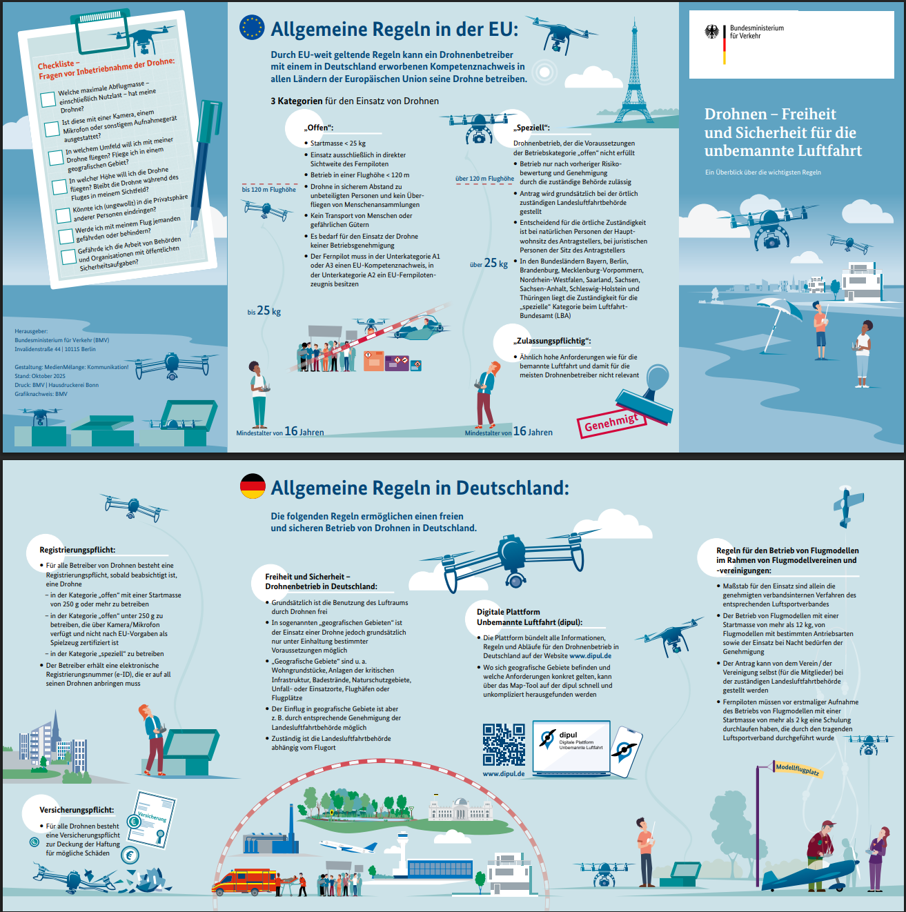

Legal Guidelines
General Regulations – German Drone Regulation and UAS Geographical Zones
Drone operations in Germany are regulated by the EU UAS regulations, especially Regulation (EU) 2019/947 and Regulation (EU) 2019/945, together with the German Luftverkehrs-Ordnung (LuftVO). The national restrictions for UAS geographical zones are defined in § 21h LuftVO.
Since 2021, the EU-wide drone rules have applied in Germany, and the national legal framework was adapted accordingly. For practical flight planning, pilots must check whether the planned operation area is affected by geographical zones, protected areas, airspace restrictions, infrastructure restrictions, or other local limitations. In Germany, the recommended official tool for checking these restrictions is DIPUL, the Digital Platform for Unmanned Aviation.
The most important rules are summarized by the Federal Ministry of Transport in its drone flyer, while the current operational reference for geographical zones is the DIPUL Map Tool.
Relevant links:
- BMV drone rules overview
- BMV drone flyer / cheat sheet
- LBA drone FAQ
- LBA risk assessment / §21h and DIPUL reference
- DIPUL geographical zones
- DIPUL Map Tool

Copyright: Bundesministerium für Digitales und Verkehr. Online source
Since there is no English version of the cheat sheet, the following text lists the rules relevant for the course framework. Relevant information is also available at the central internet platform DIPUL.
The pilot is responsible, always.
Registration as UAS Operator
Drone operators must be registered in the EU member state in which they are based. In Germany, this registration is done online through the Luftfahrt-Bundesamt (LBA).
The registration applies to the UAS operator, not to each individual drone. One registered operator can operate several drones under the same operator ID / eID. The assigned eID must be attached visibly to every drone operated by this operator.
For small drones below 250 g, registration is still required if the drone has a camera or another sensor capable of recording personal data.
In teaching contexts, it is important to distinguish between operator and remote pilot:
- The operator is the person or institution legally responsible for the operation.
- The remote pilot is the person who actually controls the drone during the flight.
If students fly a university-owned or instructor-owned drone under supervision and within the course operation, they usually act as remote pilots. In this case, the operator registration of the university or instructor can be used, provided that this person or institution is the defined operator for the flight and the drone carries the corresponding eID.
If students plan and conduct flights independently, outside the supervised course operation, they may become UAS operators themselves. In that case, they need their own operator registration, their own eID, and their own liability coverage or explicit confirmation that the flight is covered by an existing insurance policy.
For field courses, the operator role should therefore be defined before the flight. A simple course rule is:
All flights in this course are conducted under the operator responsibility of
[institution / responsible instructor]. Students act as remote pilots only when explicitly assigned and supervised.
Liability Insurance
In Germany, drone liability insurance is required for drone operations. Before any field course, the responsible person must check that the aircraft and the planned use are covered by valid liability insurance.
Specific Regulations for UAVs under 250 g
Drones below 250 g are usually operated in the EU Open A1 category. For C0 drones and drones below 250 g, the EU A1/A3 competence certificate is not mandatory.
These drones may be flown near uninvolved persons, but crowds or assemblies of people must not be overflown. If uninvolved persons are unexpectedly overflown, the overflight must be ended as quickly and safely as possible.
For teaching, sub-250 g drones are therefore the simplest practical option. They are suitable for short training flights, manual mapping exercises, object flights, and basic mission planning, provided that all local restrictions are checked before the flight.
UAVs up to 2 kg in Student Fieldwork
Drones above 250 g and up to 2 kg can also be used in student fieldwork, but the requirements are stricter.
At minimum, the remote pilot usually needs the EU A1/A3 competence certificate. Depending on the drone class and the planned distance to uninvolved persons, the A2 remote pilot certificate may also be required.
For practical courses, drones up to 2 kg should only be used when the operation can be clearly controlled:
- flight below 120 m AGL,
- visual line of sight,
- no overflight of crowds,
- safe distance to uninvolved persons,
- clearly defined take-off and landing area,
- emergency procedure,
- observer or spotter if needed,
- valid operator registration,
- visible eID,
- valid liability insurance.
For student exercises, this usually means open fields, training areas, or supervised field sites where uninvolved persons can reliably be kept away from the operation area.
Distance to Airfields and Airports
Flights near airports, airfields, and heliports are restricted and must be checked before every flight.
As a practical rule, special care is required near:
- commercial airports,
- airfields,
- heliports,
- runway extensions,
- controlled airspace.
The exact restrictions depend on the location. They must be checked using the DIPUL Map Tool and, where necessary, clarified with the responsible authority or air traffic control.
Residential Areas and Residential Properties
Residential areas and private residential properties are sensitive areas. Flights over or near them may be restricted, especially because of privacy, noise, and safety concerns.
Such flights should only be planned if they are necessary, legally allowed, and operationally safe. In teaching contexts, residential areas should normally be avoided unless explicit permission and a clear operational reason exist.
Distance to Traffic Routes
Roads, railways, waterways, and other traffic routes may be subject to distance restrictions. Flights near traffic routes require special care because a drone failure could endanger people or traffic.
Before planning such a flight, check the location in DIPUL and assess whether additional permission from the responsible infrastructure operator is required.
Nature Reserves and Protected Areas
Nature reserves and other protected areas may be restricted for drone operations. A flight may only be conducted if it is legally allowed and compatible with the protection purpose of the area.
Before planning such flights, check DIPUL and the relevant nature conservation rules. If required, obtain permission from the competent authority.
Further Geographical Restrictions
Additional restrictions may apply near sensitive locations such as:
- accident scenes and emergency operation sites,
- industrial facilities,
- prisons,
- military facilities,
- police facilities,
- constitutional bodies,
- power generation and distribution infrastructure,
- hospitals,
- military exercises.
These restrictions are part of the German geographical-zone logic under § 21h LuftVO. Before every flight, the current situation must be checked using DIPUL.
Practical Rule for Field Courses
For teaching, the safest and simplest setup is:
- sub-250 g drone where possible,
- open area,
- no uninvolved persons nearby,
- no protected area,
- no airport or heliport conflict,
- clear take-off and landing zone,
- one responsible pilot,
- one observer,
- short test flight before the actual exercise.
The legal text, the LBA information pages, and the DIPUL Map Tool are the operational references. This summary is only a teaching-oriented checklist and does not replace the current legal requirements.
Student Projects and Independent Flights
If students want to conduct their own UAV projects, the operator role must be clarified before the flight. If the project is conducted as part of the course under the responsibility of the university or instructor, students may act as remote pilots using the registered operator ID/eID of the defined operator. In this case, the flight must follow the course rules, insurance coverage, supervision concept, pre-flight checklist, and approved operation area.
If students plan and conduct flights independently, outside the supervised course operation, they may become UAS operators themselves. In that case, they need their own LBA operator registration/eID, valid liability insurance or confirmed insurance coverage, the required remote-pilot competence, and their own check of all geographical zones and local restrictions using DIPUL.
For student projects, the recommended procedure is therefore: define the operator, check insurance, verify pilot competence, check the location in DIPUL, document the mission plan, and approve the flight before take-off.
If you plan to operate UAVs independently (i.e. as the responsible operator), you must register as a UAS operator in Germany.
Registration is done online via the Luftfahrt-Bundesamt (LBA):
- https://uas-registration.lba-openuav.de/#/registration/uasOperator
Requirements
- minimum age: 16 years
- valid email address
- basic personal information
Costs
- Registration fee: approx. 20–25 € (one-time)
- Validity: 5 years
After registration, you will receive your UAS operator ID (eID).
This ID must be attached visibly to every drone you operate.
Important
You do not need your own registration if you fly exclusively under the operator responsibility of the course instructor or institution and use their registered UAV.